From tonight to morning.
36 phone screens · 12 boards · Changing light
Open a board to inspect its three screens at full size. The set uses purple night, cream day and amber dawn themes, clearer typography, and grouped floating navigation.
Phone-only scope. These are static visual prototypes with fictional sample data; wearables are excluded.
01 · Everyday
Tonight · Sleep report · Wake-up challenge
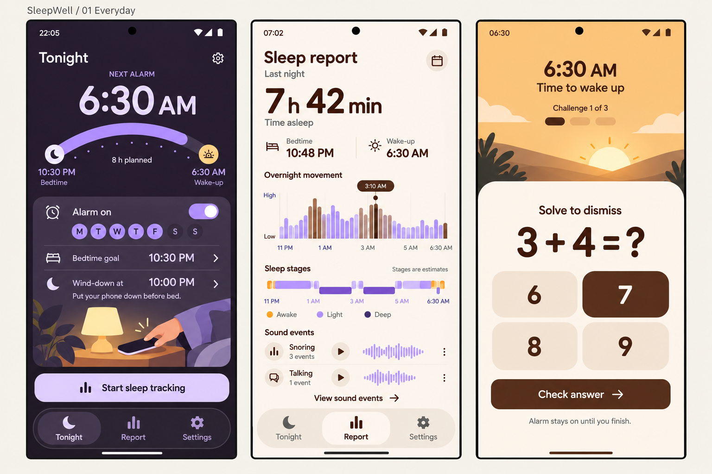
Documentation behind this flow
02 · Alarms
Alarm list · Edit alarm · Smart wake-up
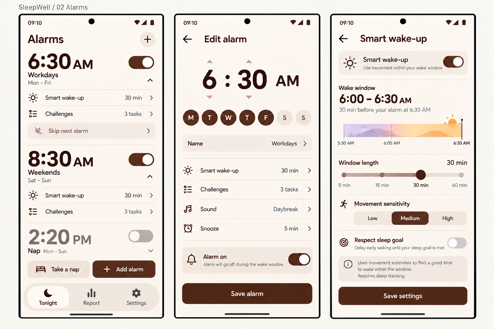
Documentation behind this flow
03 · Alarm sound & backup
Choose alarm sound · Gentle wake-up · Snooze & backup
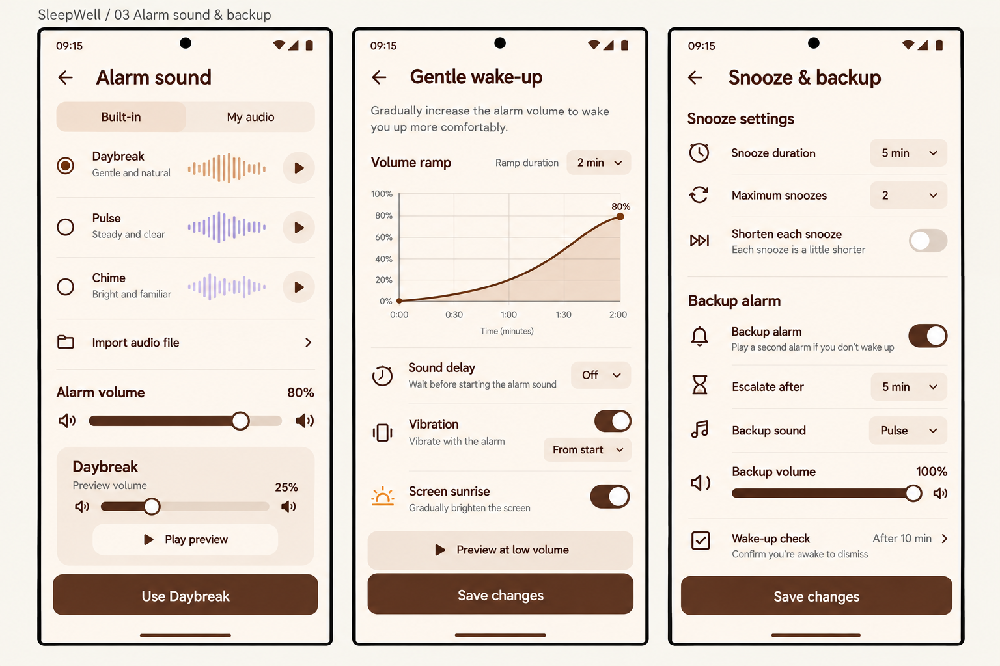
04 · Wake-up challenges
Challenge routine · QR / NFC enrollment · Wake-up check
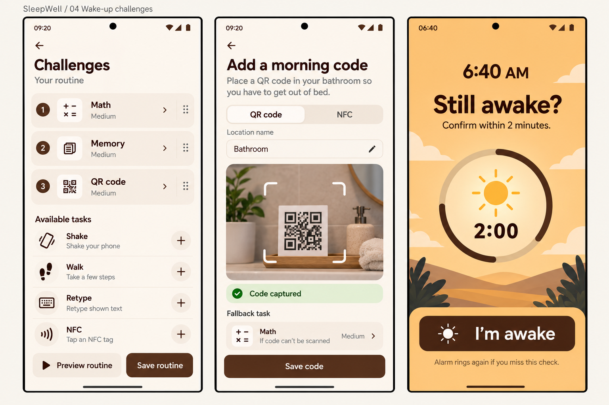
Documentation behind this flow
05 · Wind-down & bedtime
Wind-down · Blocked apps · Sleep goals
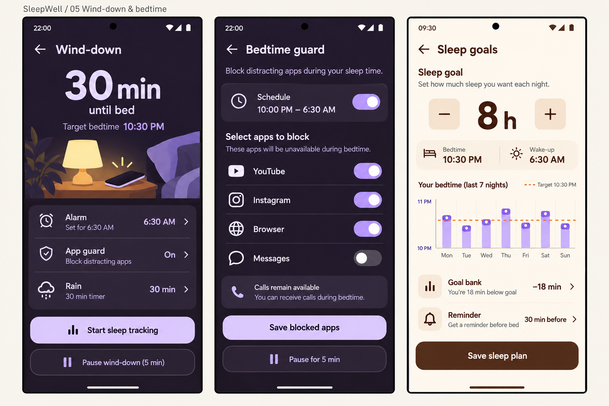
Documentation behind this flow
06 · Phone sleep tracking
Tracking setup · Sonar calibration · Live tracking
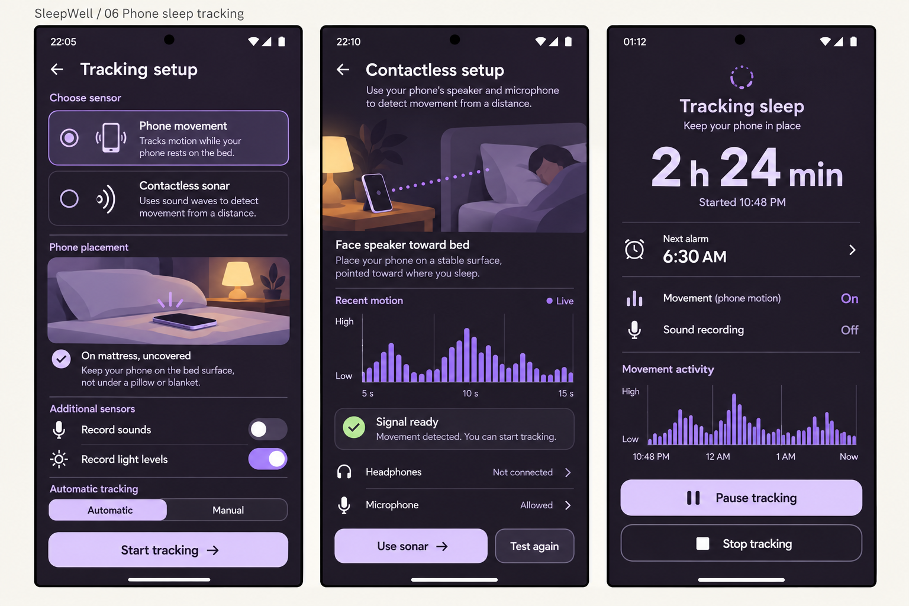
Documentation behind this flow
07 · Sleep sounds & recordings
Sleep sound mixer · Sound-event library / player · Anti-snoring cues
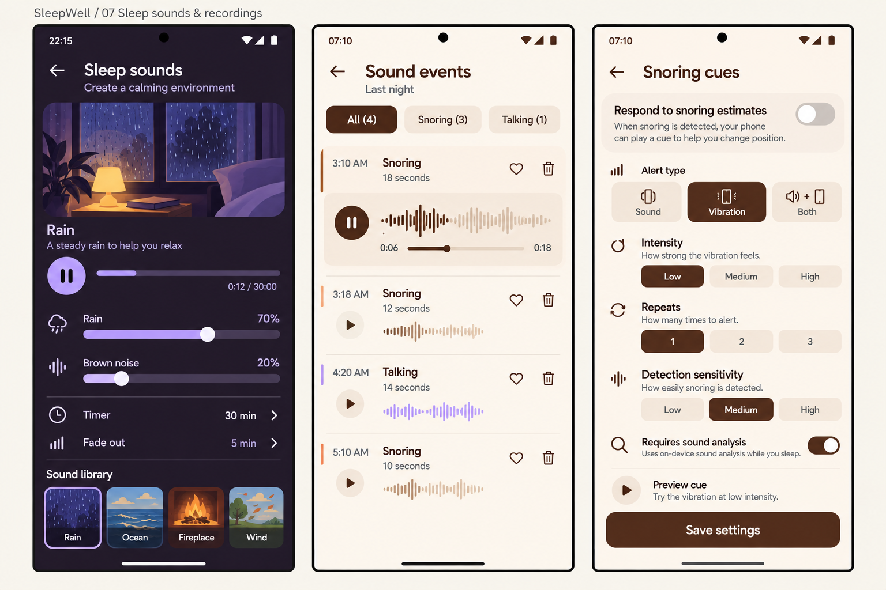
Documentation behind this flow
08 · History & editing
Sleep history · Weekly trends · Edit sleep record
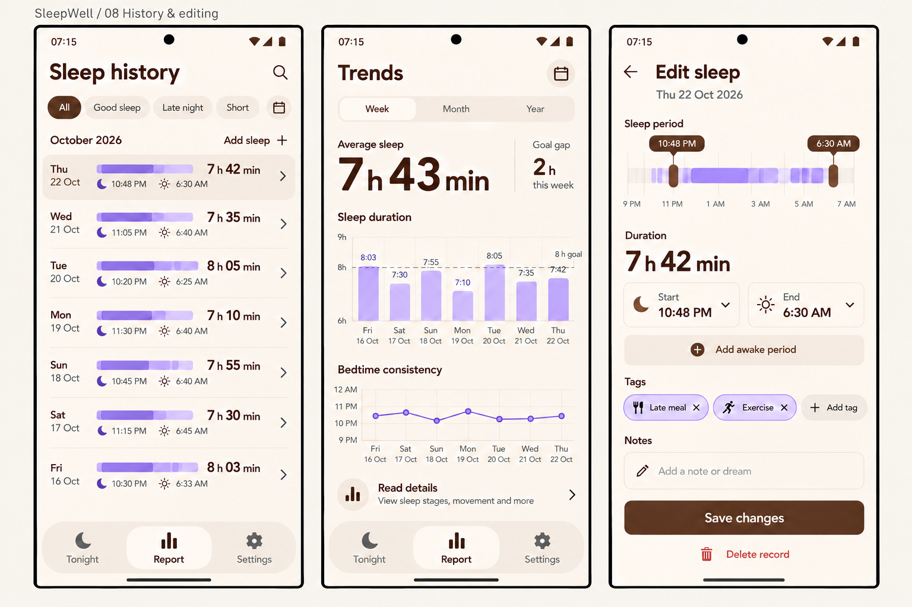
Documentation behind this flow
09 · Rhythm, naps & travel
Sleep regularity · Nap timer · Travel / light-cue setup
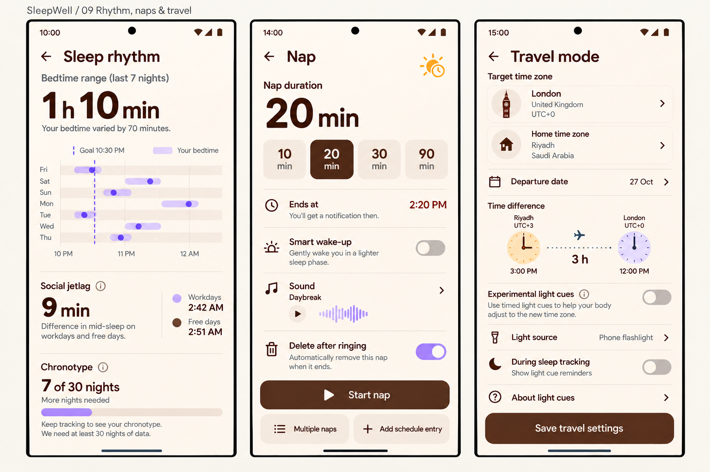
Documentation behind this flow
10 · Automatic tracking & room signals
Automatic tracking · Phone motion test · Room conditions
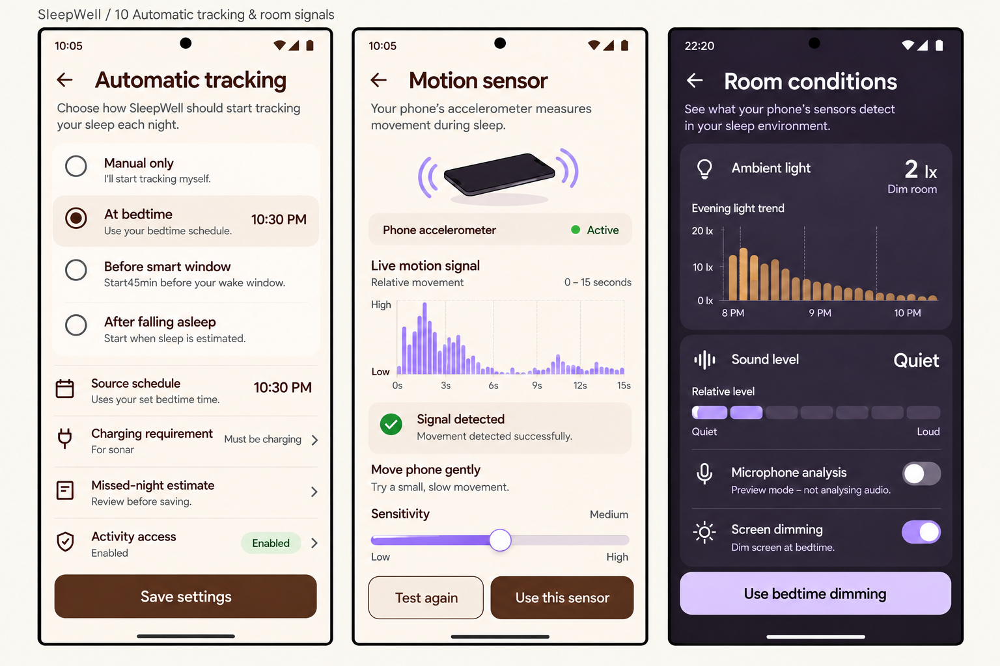
Documentation behind this flow
11 · Settings & integrations
Settings home · Health Connect (sleep only) · Automation rules
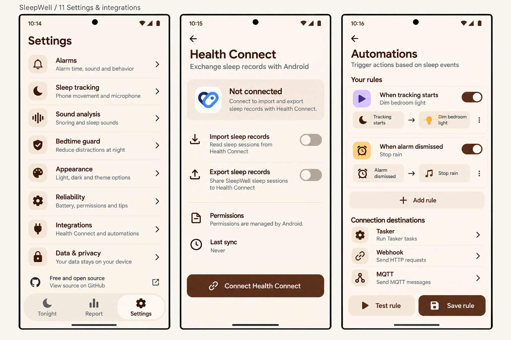
Documentation behind this flow
12 · Reliability, privacy & appearance
Alarm readiness · Backup & privacy · Appearance / smart-light setup
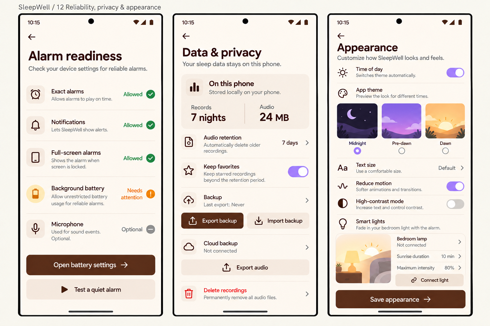